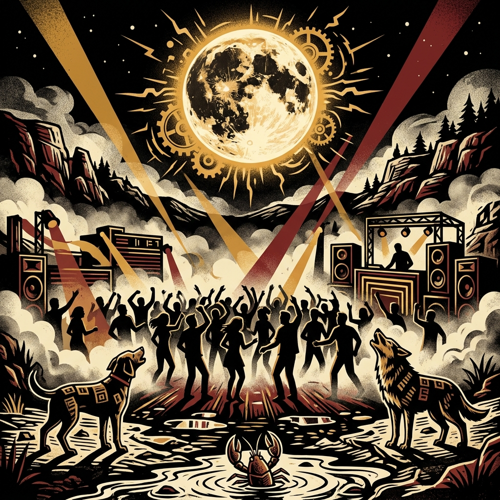

II · a sacerdotisa
A Sacerdotisa
O véu, o saber silencioso, o limiar. Quando ela aparece, o convite é para parar e ouvir a intuição que a pista geralmente silencia.
uma leitura visual, fragmentada, desenhada em madeira e sombra. aqui os arcanos não prevêem o futuro; eles iluminam a estrutura do agora.
O véu, o saber silencioso, o limiar. Quando ela aparece, o convite é para parar e ouvir a intuição que a pista geralmente silencia.

O início, o salto, o risco de ser livre. Não é falta de juízo, é a coragem de começar do zero sem saber onde o terreno termina.

O inconsciente, os medos, os reflexos que brilham no escuro. A verdade não está na superfície, mas na sombra que ela projeta.

A queda necessária. Tudo o que foi construído em cima de bases falsas precisa ruir para que o espaço respire novamente.

A transformação, o fechamento de ciclo. Nada acaba de verdade; a forma apenas se desfaz para algo novo poder emergir.